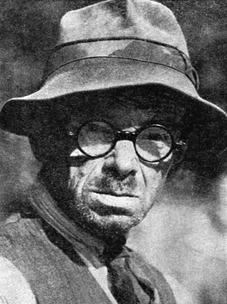
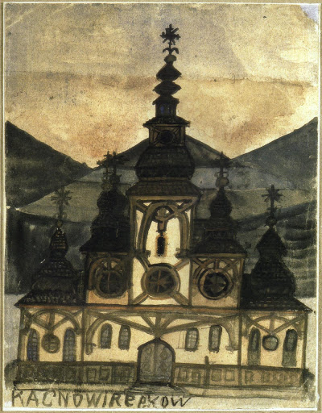
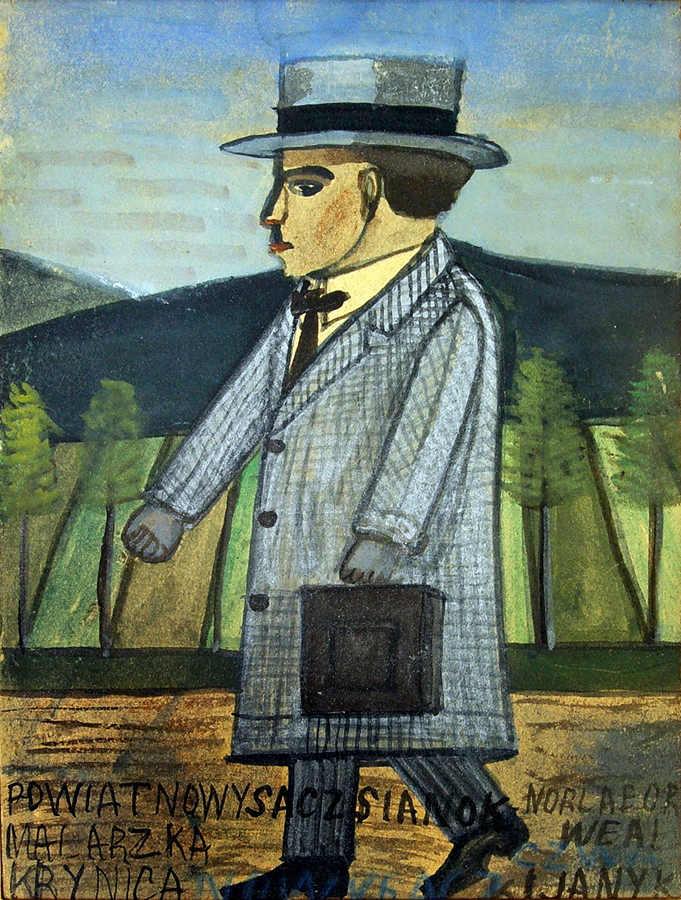
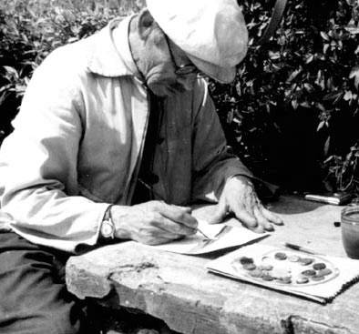
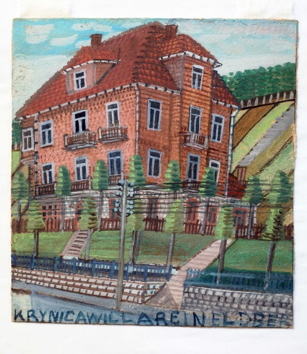
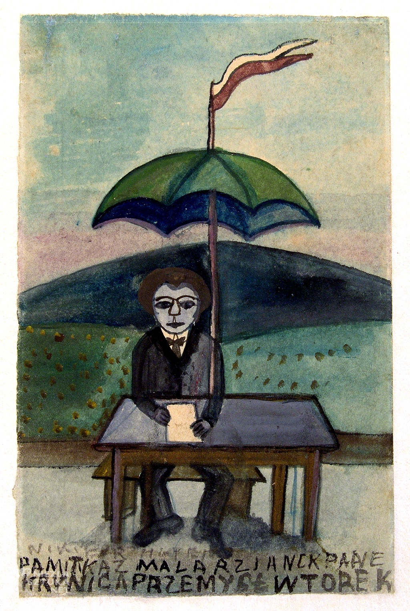
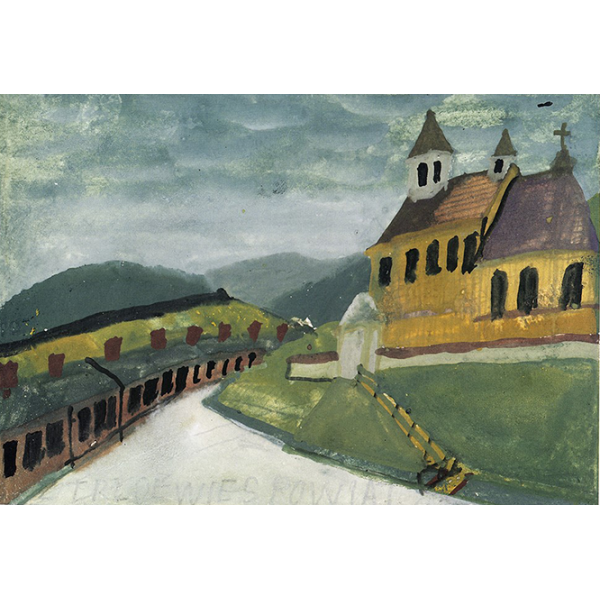
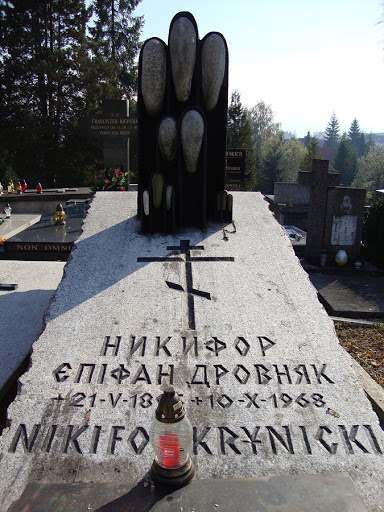

Twórczość Nikifora Krynickiego

Nikifor zwany też Nikiforem Krynickim; (właśc. Epifaniusz Drowniak)
urodził się w 1895 roku w Krynicy-Zdrój, zmarł w 1968 tamże. Samouk,
zaliczany do grona najwybitniejszych na świecie malarzy prymitywistów.
Był z pochodzenia – po matce – Łemkiem (jego ojciec był Polakiem, według
legendy – uznanym malarzem, kryptonimowanym jako "T"). Także po matce,
która wychowywała go samotnie, w wielkiej biedzie i poniewierce,
najmując się do różnych prac gospodarskich, odziedziczył wadę słuchu i
wymowy. Osierocony podczas I wojny światowej, nie umiejący porozumieć
się z otoczeniem, traktowany był początkowo przez krynicką społeczność
jako odmieniec - izolowany fizycznie i psychicznie, wyśmiewany. Nie
wiadomo, skąd wzięło się jego imię (przezwisko? oryginalnie brzmiało ono
prawdopodobnie Netyfor), w każdym razie używał go od najmłodszych lat.
Nie wiadomo również, kiedy zaczął rysować i malować. Od początku jednak
przejawiał ogromną wolę dążenia do celu, jaki sobie wyznaczył – być
malarzem, być "Matejką z Krynicy".

"Cerkiew o zachodzie słońca" (lata 20)
Nie wiadomo również, kiedy zaczął rysować i malować. Od początku jednak
przejawiał ogromną wolę dążenia do celu, jaki sobie wyznaczył – być
malarzem, być "Matejką z Krynicy". Talent Nikifora przejawiał się głównie
w twórczości na kawałkach tektury, okładkach zeszytów, skrawkach papieru,
na których uwieczniał autoportrety, widoki krynickich willi i cerkwi. Był
przy tym wysoce płodnym twórcą, stworzył blisko 40 tysięcy dzieł. W
centrum Krynicy-Zdroju, nad potokiem Kryniczanka w zabytkowej willi
Romanówka znajduje się Muzeum Nikifora. Największy zbiór obrazów i
rysunków Nikifora znajduje się w Muzeum Okręgowym w Nowym Sączu.

Malarz w drodze do pracy (lata 30)
Twórczość Nikifora odkryta została w 1930 roku przez ukraińskiego malarza
Romana Turyna, który zapoznał z nią polskich i ukraińskich malarzy
kapistów, przebywających w Paryżu. Obrazy Nikifora wzbudziły ich zachwyt,
zwracali przede wszystkim uwagę na bezbłędne operowanie kolorem.
Entuzjastyczne opinie środowiska artystycznego nie zmieniły jednak
nieprzychylnego stosunku do jego twórczości – nadal nie znajdował nabywców
na swoje prace i zrozumienia dla swej sztuki. Pierwsza publikacja na temat
Nikifora pojawiła się w roku 1938 w czasopiśmie „Arkady” nr 3. Napisał ją
Jerzy Wolff – nabywca dużej kolekcji dzieł Nikifora. Pisał on o nim tak:
"Ze sztuką tą (Nikifora) zetknęliśmy się ja i moi przyjaciele przed
paru laty w Paryżu, zetknięcie było olśniewające, pamiętam dotąd chwilę,
kiedy w pracowni Janów Cybisów stanąłem po raz pierwszy wobec tych
małych akwarelek i [...] dotąd nie ochłonąłem z podziwu. Uderzyła mnie w
tych pracach niezwykła dojrzałość i [...] odrębność [...]. Zamalowano w
ciągu wieków niezliczoną ilość kawałków płótna i deski, a te kawałeczki
papieru nie przypominały [...] nic, com widział. [...] Te małe obrazki
są proste jak natura, jedyność ich polega wyłącznie na tym, że
najzupełniej szczerze zobaczono rzeczywistość innymi niż wszyscy oczyma.
[...] W absolutnej wrażliwości Nikifora na barwę, którą porównać można
do absolutnego słuchu, przeglądają się [...] nasze własne marzenia
malarskie [...]."
Dalej Wolff stwierdzał, że Nikifor:
"[...] pracuje zawsze w gamach, każdy jego obrazek jest rozwiązaniem
przynajmniej trzech elementów barwnych; zestawienia są przy tym bardzo
dziwne i nieomylne. Dziwność ich spowodowana jest abstrakcyjnością jego
malarskiego podejścia, ale abstrakcyjność ta nie ma nic wspólnego z
nierealnością, jego świat jest zawsze najzupełniej konkretny, jest tylko
konieczne oderwanie się od przedmiotu po to, by przedmiot odtworzyć
poprzez malarstwo."

Nikifor na Rynku w Krynicy
Czuł się krynickim patriotą lokalnym – W 1947 w ramach akcji „Wisła”
został wysiedlony na Ziemie Odzyskane, skąd trzy razy wracał na piechotę
do Krynicy. Po pierwszych dwóch powrotach był ponownie wysiedlany, za
trzecim razem pozwolono mu pozostać

"Willa" (lata 40)
Staraniem małżeństwa Banachów pierwsza wystawa Nikifora (wtedy jeszcze
„Jana Nikifora”) odbyła się w warszawskiej sali SARP w dniach od 31
stycznia do 8 lutego 1949. Dopiero dziewięć lat później prace Nikifora
pokazano za granicą: od 22 maja do 30 czerwca 1958 w paryskiej galerii
Diny Vierny, potem w Amsterdamie od 2 do 26 października 1959, w Brukseli
od 14 do 26 listopada 1959, w Liège (Leodium) od 25 listopada do 13
grudnia 1959 i w Hajfie od 4 lutego 1960. W Niemczech odbyły się trzy
wystawy: 2 lipca do 4 września 1961 w Baden-Baden, od 16 września do 19
października 1961 we Frankfurcie nad Menem i od 29 października do 10
grudnia 1961 w Hanowerze.

"Autoportret pod parasolem", ze zbiorów Muzeum Okręgowego w Nowym Sączu
W 1962 roku, kiedy Nikifor miał wyjechać na wystawę swoich prac w
Bułgarii, okazało się, że artysta nie ma żadnych dokumentów, na podstawie
których możliwe byłoby wydanie dowodu tożsamości. Wówczas, na wniosek
Stefana Półchłopka, przewodniczącego Miejskiej Rady Narodowej w Krynicy,
sąd w Muszynie określił jego tożsamość – Nikifor Krynicki. Na tej
podstawie 18 października 1962 roku Urząd Stanu Cywilnego w Krynicy
wystawił Nikiforowi Krynickiemu akt urodzenia. 27 marca 2003 roku Sąd
Rejonowy w Muszynie, działając na wniosek Zjednoczenia Łemków, unieważnił
akt urodzenia z 1962 roku, uznając, że artysta znany jako Nikifor to
urodzony 21 maja 1895 roku Epifaniusz Drowniak

Ostatni niedokończony obraz Nikifora
Od 1960 roku aż do śmierci Nikiforem opiekował się krynicki artysta malarz
Marian Włosiński. Poświęcił dla niego swój talent i stworzył mu dobre
warunki do pracy i życia, a po śmierci Nikifora zadbał o zachowanie jego
twórczości. Nikifor Krynicki zmarł 10 października 1968 w Domu Pomocy
Społecznej w Foluszu k. Jasła na gruźlice. Został pochowany na cmentarzu w
Krynicy. Na jego grobie znajdują się obecnie dwa napisy: „Никифор Єпіфан
Дровняк” i „Nikifor Krynicki”

Grób Nikifora w Krynicy